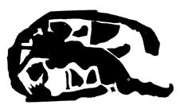
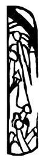
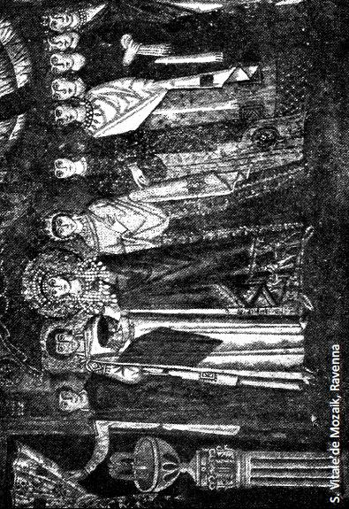

Genel Estetik Üzerine

Giriş
Her sanat eseri, çağının çocuğu ve çoğu zaman duygularımızın kaynağıdır. Bundan da anlaşıldığı gibi, uygarlığın her dönemi asla tekrarlanamayacak, kendine özgü bir sanat meydana getirir. Geçmişin sanat ilkelerini canlandırma çabaları en fazla ölü bir sanat doğurur. Eski Yunanlılar gibi yaşamamız ve hissetmemiz olanaksızdır. Aynı şekilde, heykelde Yunan yöntemlerini takip etmeye çalışanlar da yalnızca bir form benzerliği elde ederler, eserleri ruhsuz kalır. Böylesi bir taklidin maymunun yaptığı taklitten farkı yoktur. Dıştan bakıldığında maymun insanı andırabilir; burnunun ucunda bir kitap tutarak oturacak ve düşünceli bir ifadeyle sayfaları çevirecektir, oysa yaptıklarının onun için bir anlamı yoktur.
Oysa sanatta, temel bir gerçeğe dayanan, başka türlü bir dış görünüm benzerliği söz konusudur. İki ayrı dönemin ahlaki ve ruhsal atmosferine hâkim eğilimlerde, şevkle izlenen ideallerde ve hislerde benzerlikler olduğunda, önceki dönemde bu hislerin ifade edilmesine hizmet etmiş olan dışsal formlar yeniden canlanır. Bugün Primitiflere duyduğumuz yakınlık ve onlarla kurduğumuz ruhsal ilişki bunun bir örneğidir. Bu sanatçılar da bizim gibi, eserlerinde yalnızca içsel hakikatleri ifade etmeye çalışmış, dışsal forma önem vermemişlerdir.
İçsel yaşantının bu çok önemli kıvılcımı bugün yalnızca bir kıvılcım. Materyalizm yıllarının ardından bugün yeni yeni uyanmakta olan zihinlerimiz, inançsızlığın, amaçsızlığın ve idealden yoksun olmanın umutsuzluğu içinde. Evrenin yaşamını kötü, yararsız bir oyuna çevirmiş olan materyalizm kâbusu henüz geçmiş değil, ruhu hâlâ pençesinde tutuyor. Uçsuz bucaksız karanlığın içinde yalnızca cılız bir ışık küçücük bir yıldız gibi parıldıyor. Fakat cılız ışık yalnızca bir sezgi ve ruh onu gördüğünde, ışık yalnızca bir düş mü, gerçek olan karanlık mı diye şüpheyle titriyor. Bu şüphe ve materyalist felsefenin süregiden zulmü ruhlarımızı Primitiflerden keskince ayırıyor. Tıpkı yıllar boyu gömülü kaldığı topraktan çıkarılan değerli bir vazonun çatlak çıkması gibi, ruhlarımız da dile geldiklerinde çatlak sesler çıkarıyorlar. Bu nedenle, şu anda içinde bulunduğumuz ve Primitiflerle geçici bir form benzerliği taşıyan evre yalnızca kısa süreli olabilir.
Bugünün sanat formlarıyla dününkiler arasındaki bu iki benzerliğin birbirlerine taban tabana zıt oldukları hemen anlaşılacaktır. Tamamen dışsal olan birincinin geleceği yoktur. İçsel olan ikincisi ise geleceğin tohumlarını içinde taşımaktadır. Ruhu uzun süre avcunda tutmuş olan materyalizm kötü bulunup bir kenara bırakılıyor, şimdi aklanmış ve çilesini doldurmuş ruh yeniden ortaya çıkıyor. Korku, neşe, keder gibi, önceki döneme özgü karışık duygular artık sanatçıyı cezbetmeyecek. Sanatçı, henüz adı bulunmamış daha ince duygularını uyandırmaya çalışacak. Kendisi karmaşık ve görece daha duyarlı bir yaşam sürecek, eserleri de hissetme yeteneğine sahip izleyicilere kelimelerle anlatılamayacak yüce duygular verecek.
Ancak günümüz izleyicisi böyle hislere pek kapılmıyor. İzleyicinin sanat eserinde aradığı şey, belirli bir amaca yönelik bir doğa taklidi (örneğin alışılmış anlamda bir portre), doğanın belirli bir geleneğe uygun şekilde resmedilmesi (izlenimci resim) ya da bir duygunun doğal formlarla ifade edilmesi (Stimmunga[6] sahip dediğimiz türden bir resim). Tüm bu resim türleri, gerçekten sanatsal olduklarında amaçlarını yerine getirir ve ruhu beslerler. Bu ifade, ilk örneğe uygundur uygun olmasına ya, üçüncü örneğe daha bir uygundur; zira üçüncü tür resimler bakanı kimi heyecana sürükler. Duyguların böyle uyuşması ya da zıt düşmesi yüzeysel veya değersiz olamaz; bir resmin Stimmungu, izleyicinin Stimmungunun derinleşmesine ya da arınmasına yol açabilir. Bu tür sanat eserleri en azından ruhu bayağılıktan korur, akort anahtarının çalgıyı coşturması gibi bunlar da ruhu coşturabilir. Ancak arınma ve ruhun duyduğu coşku tek taraflı kalır; sanatın etkileme olanaklarından tamamen yararlanılmamıştır.
Pek çok odaya bölünmüş bir bina düşünün. Bina küçük ya da büyük olabilir. Odaların tüm duvarları, sayıları belki binlere varan irili ufaklı resimlerle kaplı olsun. Resimler doğayı renklerle temsil etmektedirler. Gün ışığında ya da gölgede, suyun içindeki, su içen ya da çimende yatan hayvanlar, hemen yanında İsaya inanmayan bir ressamın elinden çıkma bir çarmıha gerilme sahnesi, çiçekler, oturan, ayakta duran ya da yürüyen çoğu çıplak insan figürleri, uzakta izlenimi versin diye ufaltılarak çizilmiş pek çok çıplak kadın, elmalar ve gümüş tabaklar, encümen üyesi bilmemkimin portresi, günbatımı, kırmızılı kadın, havalanmış ördek, leydi bilmemkimin portresi, uçan kazlar, beyazlı kadın, üzerlerinde parlak sarı ışık benekleri bulunan buzağılar, Prens bilmemkimin portresi, yeşilli kadın… Tüm bunlar, ressamların ve resimlerin adlarını da içeren bir kitaba özenle konulmuş olsun. İnsanlar, ellerinde kitaplar, sayfaları çevire çevire ve isimleri okuya okuya duvardan duvara dolaşırlar. Sonra geldiklerinden ne daha zengin ne de daha yoksul halde oradan ayrılır ve hemen sanatla alakasız işlerine gömülüverirler. Neden gelmişlerdi? Her resimde koca bir yaşam gizli. Korkular, kuşkular, umutlar ve neşelerle dolu bir yaşam…
Bu yaşam neye hizmet etmektedir? Yetkin sanatçının vermek istediği mesaj ne? Schumann, “İnsanların karanlık kalplerine ışık götürmek… Sanatçının görevi budur,” der, Tolstoy ise “Sanatçı her şeyi resmedebilen ve boyayabilen kişidir,” demiştir.
Az önce bahsi geçen sergiyi göz önüne aldığımız takdirde, sanatçının etkinliğine dair bu iki tanımdan ikincisini seçmemiz gerekir. Farklı seviyede yetenek, hüner ve gayretle, kabaca ya da nefis bir şekilde resmedilmiş nesneler bir tuval üzerinde bir araya toplanır. Sanatın görevi bütünün armonisini kurmaktır. Uzmanlar, (ip cambazını hayretle izler gibi) “yeteneğe” hayran olur, (kıymalı böreğin tadına bakar gibi) “resmin vasıflarının” tadını çıkarırlar. Oysa ruhlar aç gelir aç giderler.
Bu bayağı sürü, odaları gezinip resimlerin “hoş” ya da “harikulade” olduğunu söyleyip durur. Konuşabilecek olanlar tek laf etmemiş, dinleyebilecek olanlar tek laf işitmemiştir. Sanatın bu durumuna “sanat için sanat” adı verilir. Renklerin yaşamının ve içsel anlamın böylesine ihmal edilmesine, sanatsal gücün bu şekilde boşa harcanmasına “sanat için sanat” denir.
Sanatçı hünerine, görme kudretine ve deneyimine karşılık elle tutulur bir ödül arayışı içindedir. Kibrini ve hırsını tatmin etmek sanatçının amacı haline gelmiştir. Sanatçılar arasında işbirliği yerine itişip kakışma vardır. Aşırı rekabetten ve fazla üretimden yakınılır. Nefret, partizanlık, kamplar, kıskançlık ve entrika, bu amaçsız ve materyalist sanatın doğal sonuçlarıdır.[7]
İzleyiciler, kendilerinden daha yüksek ideallere sahip olan ve amaçsız bir sanata yanaşmayan sanatçılara sırt çevirirler.
Duygudaşlık, izleyicinin sanatçının bakış açısını kavrayacak şekilde yetiştirilmesidir. Biraz önce sanatın çağının çocuğu olduğunu söyledik. Böyle bir sanat yalnızca ortamın mevcut sanat havasını besler. Yalnızca çağının çocuğu olan, geleceğe yönelik güç taşımayan, geleceğin yaratıcılarından olamayan sanat, kısır bir sanattır. Fanidir ve kendisini besleyen atmosfer değiştiği an yok olur.
İnsanı daha çok aydınlatan diğer tür sanat ise, dönemine özgü hislerden kaynaklanmakla birlikte onların yankısı ya da aynası olmaz, içinde geleceği yansıtan derin ve etkili bir güç barındırmaktadır.
Sanat ruhsal yaşantının en kuvvetli unsurlarından biridir ve ruhsal yaşantı, ileri ve yukarı doğru giden, karmaşık fakat ayırt edilmesi kolay ve belirgin bir harekettir. Hareket, deneyimin hareketidir. Farklı biçimler alabilir, fakat aslında aynı içsel düşünce ve amaca dayanmaktadır.
Daima yukarı ve ileri doğru gitme ihtiyacı, acı ve korkuyla karanlığa gizlenir. Bir safha aşıldığında ve şeytani taşlar yoldan temizlendiğinde, görünmez ve hain bir el yola yeni engeller saçar. Böylece yol, çoğu zaman kesilmiş ya da hepten kapanmış gibi gözükür. Sonra bizim gibi, ama görme kudretine de sahip biri çıkagelir ve bizi kurtarır.
O, yolu görür ve gösterir. Bazen gücünden kurtulmak ister, çünkü katlanması güç bir derttir bu. Ama yapamaz. Aşağılanan ve nefret duyulan bu adam, parçalara ayrılmış insanlığın ağır arabasını taşlar arasından yukarı ve ileri doğru sürükler.
Çoğu zaman, dünyadan göçtükten yıllar sonra, insanlar onun bedenini mermerde, demirde, bronzda ya da taşta, devasa boyutlarda yeniden yaratmaya çalışırlar. Sanki teni aşağı gören ve yalnızca ruh için yaşayan bu ulu şehitlerin, bu insanlık hizmetkârlarının hakiki değerleri bedensel varlıklarıymış gibi! Ama böyle bir anıtın dikilmesi, en azından artık pek çok kişinin şimdi onurlandırdıkları bu varlığın bir zamanlar yalnız başına durduğu noktaya eriştiğini gösterir.
